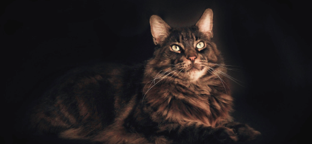

Питомцы
Все представители нашего питомника имеют ветеринарный паспорт с отметками о прививках и документ с родословной



Все представители нашего питомника имеют ветеринарный паспорт с отметками о прививках и документ с родословной
Мейн-Кун - это порода, которая вызывает к себе уважение. Приобретая в свой дом этого питомца, вы получите умное животное, которому нет равных

Приобретая животное в нашем питомнике, вы получите
Бесплатное ветеринарное обслуживание 5 лет
Консультирование по любому вопросу 24 часа в сутки
Индивидуальный подбор питания для вашего кота
Мы разработали 8 правил, следуя которым, шерсть вашего кота всегда будет блестящей, мягкой и послушной
Нужно ли стричь когти? Это мы и выясним, плюс ко всему расскажем как подобрать идеальную когтеточку
Владельцам котов необходимо регулярно осматривать ушки и глазасвоих питомцев, ведь это может быть признаками заболевания
В нашем питомнике существует два подхода: натуральное питание и питание промышленными кормами, но выбирать только вам